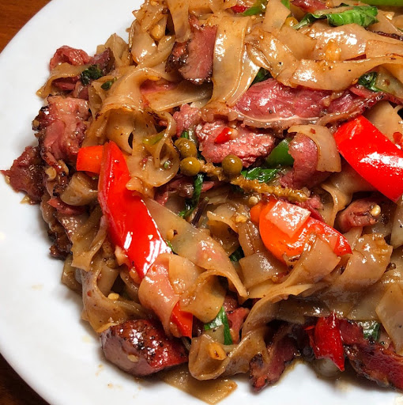

Pad Kee Mao

Description
Pad Kee Mao, or Drunken Noodle, is a delicious Thai dish composed of rice noodles, oyster sauce, Thai seasoning sauce, chilis, and holy/Thai basil.
Ingredients
- Rice Noodles
- Garlic
- Thai chilis
- Thai (or holy basil if you can get it)
- Chicken
- Oyster sauce
- Thai seasoning sauce such as Golden Mountain
Steps:
- Warm the rice noodle paper and cut it into noodles.
- Finely mince and combine the chili peppers and garlic.
- Mix the oyster sauce and Golden Mountain Sauce.
- Be a boss.